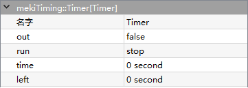

mekiTiming
- DlyOff
-
DlyOff delays the on to off transition by a time delay.
- Parameters:
Out (boolean) – Output value
In (boolean) – Input value
DelayTime (integer, second) – Delays time from on to off transition
Hold (integer, millisecond) – Countdown of delay time
{kind=link}
- DlyOn
-
DlyOn delays the off to on transition by a time delay.
- Parameters:
Out (boolean) – Output value
In (boolean) – Input value
DelayTime (integer, second) – Delays time from off to on transition
Hold (integer, millisecond) – Countdown of delay time
{kind=link}
- OneShot
-
OneShot generating boolean one-shot pulse. Out = true for pulseWidth sec, beginning at rising edge of In, the pulse retriggers on each rising edge of In, when canRetrig = true.
- Parameters:
Out (boolean) – Output value
In (boolean) – Input value
PulseWidth (integer, second) – Pulse width
CanRetrig (boolean) – Enable the retrigger function
{kind=link}
- Override
-
Override provide output of true for OverrideTime during Trigger is triggered from false to true. The remaining override time is counted in RemainTime.
- Parameters:
Out (boolean) – Output value
RemainTime (integer, minute) – Remaining override time
OverrideTime (integer, minute) – Override time
Trigger (boolean) – Triggers the component start
{kind=link}
- Timer
- 
Timer outputs a pulse for the configured amount of Time, Run is used to trigger the timer:
If low, Out is forced to be false
If high, Out = 1 until timer reaches time seconds
Alternatively, the pulse can be fired from the “start Timer” action if in is not linked.
- Parameters:
Out (boolean) – Output value
Run (option) – fire the timer on transition from false to true
Time (integer, second) – Duration of output pulse
Left (integer, second) – Remaining time before output transition from true to false
{kind=link}